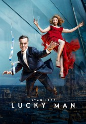

")
 
 IMDB-Wertung: 7.2 / 10
IMDB-Wertung: 7.2 / 10  Metascore:
Metascore: 
DI Harry Clayton arbeitet in Central London für die Mordkommission. Gewaltige Spielschulden haben dafür gesorgt, dass seine Ehefrau ihm mitsamt seines Sohnes den Rücken gekehrt hat. Bei einem berüchtigten Crime-Boss hat Clayton so große Schulden angesammelt, dass darüber sein Leben bedroht ist. Das alles ändert sich nach Claytons Zusammentreffen mit einer mysteriösen Frau, die ihm ein altes Armband gibt. Dadurch erlangt er anscheinend die Kontrolle über "Glück und Pech" - doch was ihn das kosten wird, ist nicht abzusehen.
S01-S02 complete
Jahr: 2016
Dauer: 43 Minuten
FSK:
Land: Studio: Carnival Film & TelevisionTonspuren:
Untertitel:
Auflösung: 720p (1280x720) Größe: 121856 MB
Genre: Action, Sci-Fi, TV-Serie
Regisseur: David Caffrey, Andy Hay, Andy De Emmony, Jon East, Brian Kelly, Jamie Childs, Marek Losey
Drehbuch: Gary Whitta
Soundtrack:
Darsteller:
 James Nesbitt als Harry
James Nesbitt als Harry Sienna Guillory als Eve
Sienna Guillory als Eve Steven Mackintosh als Detective Superintendent Winter
Steven Mackintosh als Detective Superintendent Winter Darren Boyd als DI Orwell
Darren Boyd als DI Orwell Jonathan Aris als Ralph
Jonathan Aris als Ralph Omid Djalili als Kalim
Omid Djalili als Kalim Joseph Gatt als Yury Becker
Joseph Gatt als Yury Becker Lee Nicholas Harris als Cage Fight Punter
Lee Nicholas Harris als Cage Fight Punter Matt Townsend als Passerby
Matt Townsend als Passerby Thekla Reuten als Isabella Augustine
Thekla Reuten als Isabella Augustine Burn Gorman als Doug
Burn Gorman als Doug Shane Hart als Police Officer
Shane Hart als Police Officer Alex Jennings als Karl Frierson
Alex Jennings als Karl Frierson Daniel Westwood als Police Officer
Daniel Westwood als Police Officer Phil Dunster als JC
Phil Dunster als JC Ben Aldridge als DS Ben Grady
Ben Aldridge als DS Ben Grady Stan Lee als Himself
Stan Lee als Himself Daniel Eghan als Market Shopper
Daniel Eghan als Market Shopper Amy Clare Beales als Cashier Bookies
Amy Clare Beales als Cashier Bookies Peter Singh als DC Clark
Peter Singh als DC Clark John Wark als Traffic Officer Jack
John Wark als Traffic Officer Jack Kenneth Tsang als Freddie Lau
Kenneth Tsang als Freddie Lau Peter Guinness als Vincent Lermentov
Peter Guinness als Vincent Lermentov Andrew Bicknell als Undersecretary
Andrew Bicknell als Undersecretary Ian Burfield als Foreman
Ian Burfield als ForemanDatei: X:\Comic-Serien\Stan Lees Lucky Man\Stan Lees Lucky Man S01E01 Mehr Yang als Yin .mkv seit 27.03.2017
Festplatte: Comicverfilmungen+MusikCD
 Es gibt insgesamt 34 Filme in der Gruppe 'Comic-Serien'
Es gibt insgesamt 34 Filme in der Gruppe 'Comic-Serien'